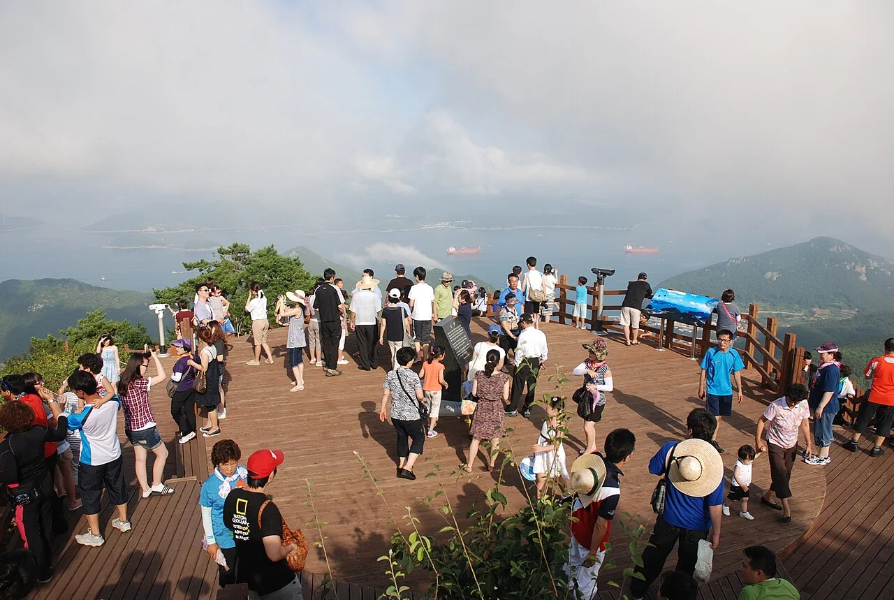
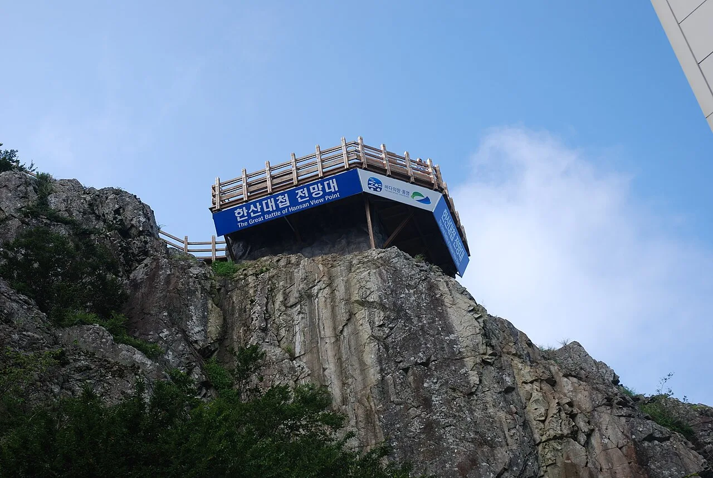
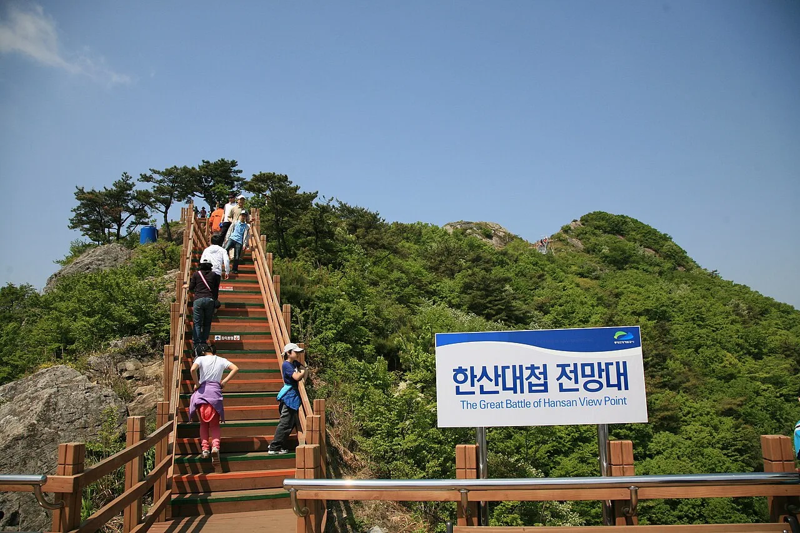
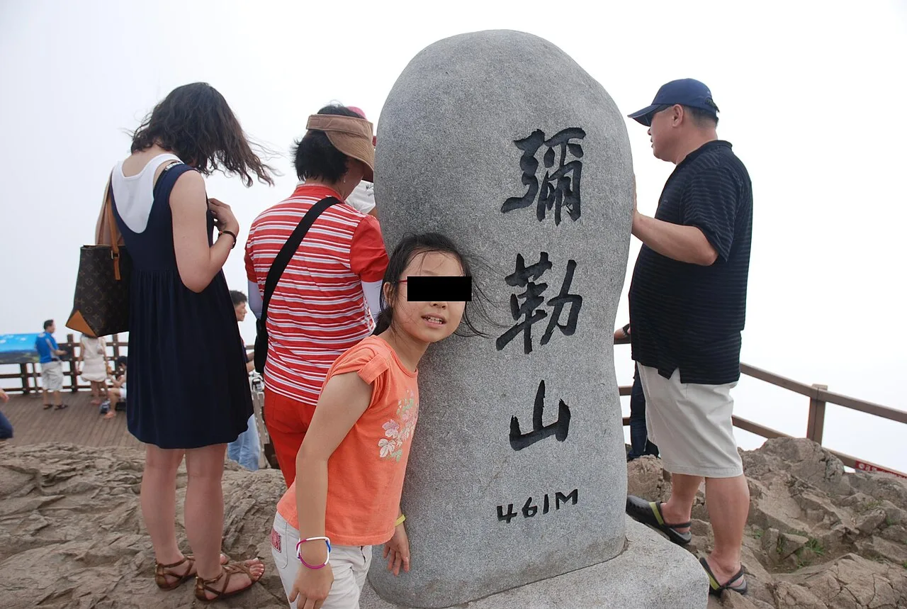

▲ 미륵산 정상 전망대에서 내려다본 한려수도. 스카이라인 루지 바로 옆 케이블카를 타면 이 풍경까지 볼 수 있다
경남 통영시 도남동, 미륵산 자락에 자리한 스카이라인 루지 통영은 국내에 하나뿐인 스카이라인 루지 시설이다. 뉴질랜드에서 출발한 스카이라인 루지는 전 세계 6곳에서만 운영되는데, 통영이 그중 하나로 2017년 2월 문을 열었다. 모터도 페달도 없이 오로지 중력만으로 움직이는 카트를 타고 미륵산 중턱에서 출발선까지, 총 3.8km 트랙을 내려오는 액티비티다. 바로 옆에는 한려수도 조망 케이블카가 있어 두 시설을 묶어 반나절 코스로 즐기는 사람이 많다. 이 기사는 타기 전 알아둬야 할 구조와 안전수칙, 요금과 운영시간까지 방문 순서대로 정리했다.
1. 스카이라인 루지란 — 세계 6곳뿐인 중력 액티비티

▲ 스카이라인 루지 승강장 바로 옆에서 출발하는 한려수도 조망 케이블카. 루지와는 별도 시설이지만 연계 할인이 있다 ⓒ Wikimedia Commons
루지(Luge)는 원래 좁은 얼음 트랙을 썰매로 활강하는 동계 스포츠 종목을 가리키지만, 스카이라인 루지는 이를 사계절 즐길 수 있게 만든 바퀴 달린 카트형 놀이기구다. 뉴질랜드 퀸스타운에서 처음 시작해 로토루아, 캐언스, 미국 괌 등 세계 6개 지점에서만 운영되고 있으며, 통영이 이 브랜드가 국내에 유일하게 들어선 곳이다. 경남 통영시 발개로 178, 미륵산(461m) 자락에 위치해 있고, 통영 시내에서 차로 10분 남짓이면 닿는다.
2. 리프트로 오르고 카트로 내려오는 구조
탑승 방식은 단순하다. 매표소에서 이용권을 구매한 뒤 전용 리프트(콘베이어 벨트형 승강 설비)를 타고 트랙 상단까지 올라간 다음, 대기하고 있는 카트에 앉아 핸들바를 조작하며 출발선까지 내려오면 된다. 카트에는 별도 동력 장치가 없고 오직 경사와 중력만으로 움직인다. 핸들바를 앞으로 밀면 가속, 뒤로 당기면 브레이크가 걸리는 구조라 조작법 자체는 간단하지만, 커브 구간에서 속도 조절에 익숙해질 때까지는 천천히 당기며 타는 것이 안전하다. 탑승 시간은 코스당 10~15분 정도이며, 이용권은 최소 2회 탑승을 기준으로 판매된다. 리프트에 다시 올라 원하는 만큼 반복 탑승할 수 있다는 점이 스키장 리프트와 비슷하다.
3. 4개 트랙, 총 3.8km — 세계 유일 360도 회전 구간

▲ 미륵산 지지탑을 지나는 케이블카 곤돌라. 루지 트랙 역시 이 산자락 경사를 따라 조성돼 있다 ⓒ Wikimedia Commons
통영 스카이라인 루지에는 난이도와 코스가 다른 4개 트랙이 있다. 완만한 곡선 위주로 누구나 부담 없이 즐길 수 있는 레전드(Legend), 스릴을 강조한 울트라(Ultra)와 그래비티(Gravity), 상대적으로 짧고 빠른 익스프레스(Express)로 구성돼 있으며 4개 트랙을 모두 합치면 총 3.8km에 이른다. 최고 지점과 최저 지점의 고도차는 약 100m다. 특히 스카이라인 루지 전 세계 트랙 가운데 유일하게 360도 회전 구간을 갖추고 있는 것으로 알려져 있어, 여러 번 타면서 트랙별 코스를 바꿔 타는 재미가 있다.
4. 안전수칙 — 탑승 가능 신장과 금지 대상
스카이라인 루지는 카트를 직접 조작해야 하는 만큼 탑승 기준이 명확하다. 신장 110cm를 넘으면 단독 탑승이 가능하고, 85~120cm는 보호자와 함께 2인 탑승만 허용된다. 85cm 미만 유아는 탑승할 수 없다. 이 밖에 음주자, 임산부, 심장질환·고혈압·허리디스크 등 지병이 있는 경우에도 탑승이 제한된다. 헬멧은 XS부터 XL까지 사이즈별로 준비돼 있어 현장에서 맞는 사이즈를 받아 반드시 착용해야 하며, 주행 중에는 두 손으로 핸들바를 잡고 다른 카트와 충분한 간격을 유지해야 한다. 비가 오거나 노면이 미끄러운 날씨에는 안전상 운행이 중단될 수 있으므로, 우천 시에는 방문 전 홈페이지나 전화로 운행 여부를 확인하는 것이 좋다.
✅ 탑승 전 체크
· 단독 탑승: 신장 110cm 초과
· 보호자 동반 탑승: 신장 85~120cm
· 85cm 미만은 탑승 불가
· 음주자·임산부·심장질환·고혈압·허리디스크 보유자 탑승 제한
· 헬멧 필수 착용(XS~XL 비치)
· 우천 시 운행 중단 가능, 방문 전 확인 권장
5. 미륵산 케이블카 연계 — 한려수도 조망 포인트

▲ 미륵산 정상부 절벽 위에 설치된 한산대첩 전망대. 이순신 장군의 한산대첩 해역을 조망할 수 있다 ⓒ Wikimedia Commons
루지 트랙 자체에서도 숲과 바다가 어우러진 풍경을 볼 수 있지만, 한려수도를 제대로 조망하려면 바로 옆 통영 케이블카(한려수도 조망 케이블카)를 함께 타는 것이 정석이다. 국내 최장 거리인 1,975m 구간을 약 9분에 오르는 케이블카를 타면 미륵산 정상(461m) 전망대까지 닿는데, 이곳에서는 한려해상국립공원의 한산도·비진도 등 크고 작은 섬들이 펼쳐지는 풍경을 볼 수 있다. 정상부에는 신선대, 한산대첩 전망대 등 별도 조망 포인트가 있어, 나무 계단을 따라 조금 더 오르면 이순신 장군의 한산대첩 해역을 굽어보는 전망까지 감상할 수 있다.

▲ 한산대첩 전망대로 이어지는 나무 계단. 정상 전망대에서 5분 남짓 더 걸어야 한다 ⓒ Wikimedia Commons

▲ 해발 461m를 알리는 미륵산 정상 표지석. 케이블카 상부 승강장에서 도보로 오를 수 있다 ⓒ Wikimedia Commons
루지와 케이블카는 운영 주체가 다른 별도 시설이지만 상호 연계 할인을 제공한다. 루지 이용권을 제시하면 케이블카 요금 2,000원이 할인되고, 반대로 케이블카 탑승권을 제시하면 루지 2~5회권을 10% 할인받을 수 있다. 다만 다른 할인과 중복 적용은 불가능하고, 할인 유효기간은 이용일로부터 2일 이내이므로 두 시설을 하루 이틀 사이에 함께 방문할 계획이라면 영수증이나 이용권을 버리지 말고 챙겨두는 것이 좋다.
통영케이블카 요금·연계할인 확인 가능6. 요금·운영시간·예약 방법
스카이라인 루지는 2회 탑승을 기본 단위로 이용권을 판매하며, 공식 홈페이지에서 사전 예매하면 현장 구매보다 저렴하다. 2회권은 음료(쥬시스) 포함 패키지 기준이라 3회권보다 가격이 다소 높게 책정돼 있는 점을 참고하면 된다. 케이블카는 왕복·편도로 나뉘며 대인·소인 기준으로 요금이 다르다. 두 시설 모두 정확한 최신 요금과 시즌별 변동 사항은 방문 전 공식 홈페이지에서 다시 확인하는 것이 안전하다.
| 이용권 | 온라인 예매 | 현장 구매 |
|---|---|---|
| 2회권(음료 포함 패키지) | 31,635원 | 33,300원 |
| 3회권 | 30,400원 | 32,000원 |
| 4회권 | 33,250원 | 35,000원 |
| 5회권 | 35,150원 | 37,000원 |
| 어린이 동반권(1인) | - | 12,000원 |
| 구분 | 대인 | 소인 |
|---|---|---|
| 왕복 | 17,000원 | 13,000원 |
| 편도 | 13,500원 | 11,000원 |
| 단체(20인 이상) 왕복 | 16,000원 | 12,500원 |
운영시간은 요일에 따라 다르다. 월~목요일은 10:00~18:00, 금~일요일은 10:00~19:00 운영하며, 매표는 마감 45분 전에 종료된다. 케이블카는 매월 2·4주 수요일이 정기휴장일이며, 기상 상황에 따라 운행이 중단될 수 있다. 위치는 경남 통영시 도남동 발개로 178이며, 문의는 루지 070-4731-8473, 케이블카 1544-3303으로 하면 된다.
스카이라인 루지 통영 공식 홈페이지에서 예약 가능✅ 통영 스카이라인 루지, 가기 전 체크리스트
· 2017년 2월 개장, 전 세계 6곳뿐인 스카이라인 루지 중 국내 유일 지점
· 전용 리프트로 상단까지 이동 후 카트로 하강, 핸들바 조작(밀면 가속·당기면 브레이크)
· 4개 트랙(레전드·울트라·그래비티·익스프레스), 총 3.8km, 세계 유일 360도 회전 구간
· 단독 탑승 신장 110cm 초과, 85~120cm는 보호자 동반, 헬멧 필수
· 옆 통영 케이블카(1,975m, 약 9분)로 미륵산 정상 한려수도 조망 가능, 상호 2,000원·10% 연계 할인
· 루지 3회권 기준 온라인 30,400원·현장 32,000원, 케이블카 왕복 대인 17,000원
· 운영시간 월~목 10:00~18:00, 금~일 10:00~19:00(매표 마감 45분 전), 케이블카 매월 2·4주 수요일 휴장
· 위치는 경남 통영시 도남동 발개로 178